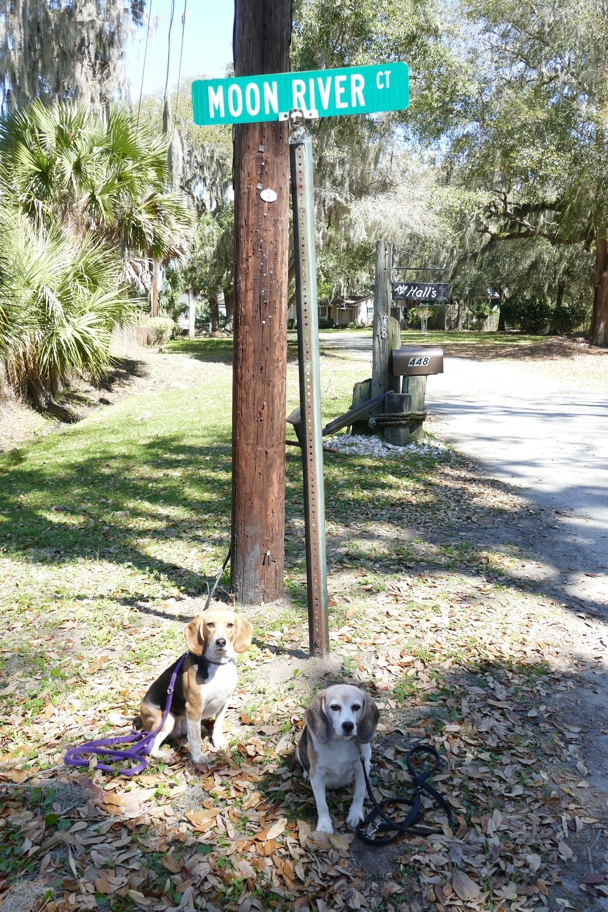

Johnny Mercer wrote "Moon River" in memory of spending summers at his uncle's house in this riverside neighborhood just outside Savannah. The old Mercer home burned recently and we found no public access to the river, but we did find this nod to the song. In Mercer's day the river was the Vernon River, but a branch of it was renamed the Moon River after the song.
Georgia Halley Beagle Savannah Wallace Beagle